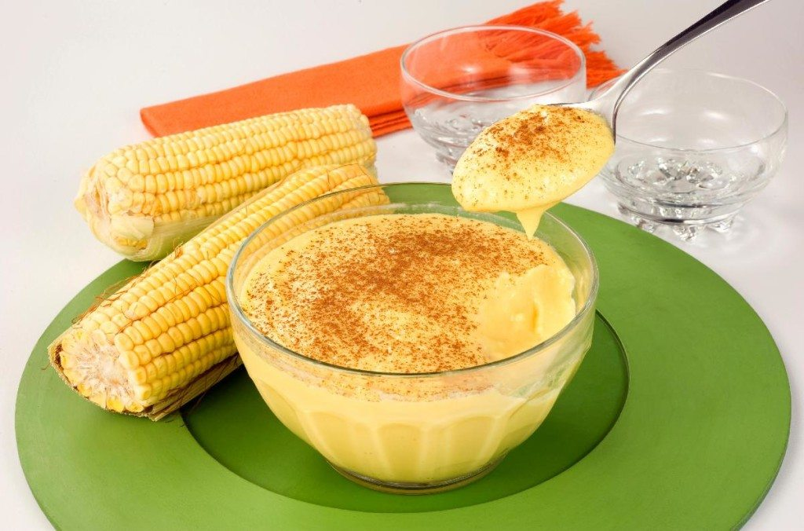

Curau de Milho
Ingredientes:
- 2 latas de milho verde
- 1 litro de leite
- 1 pitada de sal
- 1 xícara chá de açúcar
- 5 colheres de sopa de amido de milho
- Canela em pó para decorar
Modo de Preparo:
Bata as duas latas de milho junto com meio litro leite no liquidificador. Coe e recoloque o liquido no liquidificador junto com os demais ingredientes. Em uma panela, coloque o liquido e cozinhe por aproximadamente 25 minutos. Mexendo sempre.Assim que comecar a engrossar, desligue o fogo e transfira o curau para um recipiente grande ou varios pequenos. Decore com a canela em pó.